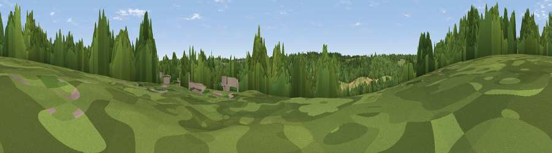

Viewpoint near Latimer
#45789 in England · top 93% of its area beats it · near Latimer · path 158 mWhere it is
The exact computed spot (SU 99825 99075). Click the marker for map links.
Public access: the nearest public right of way is about 158 m away — the final stretch may cross private land. Computed from Natural England's CRoW access layer and OpenStreetMap rights of way — not the legal definitive map. Always verify locally.
The view, rendered

A 360° render of this exact spot computed from the terrain model, tree cover and land cover — summer colours, afternoon light, calibrated against photographs of famous viewpoints. Real trees, hedges and buildings will differ in detail.
The panorama
Grey silhouette: terrain skyline in each direction (720 bearings, Earth curvature and refraction included). Dashed green: skyline with trees (+15 m) and buildings (+8 m) as obstacles. Blue strip: how far the ground is visible on each bearing.
Where the view opens
Wedge length = distance to the farthest visible ground on that bearing (vegetation-aware). Rings at 10, 25 and 50 km.
What fills the view
55% woodland · 34% grassland · 10% cropland · 1% built-up
Angular shares of the visible panorama (visual magnitude), not map area. Landscape diversity 0.43 (0–1 Shannon).
Key numbers
More beautiful places nearby
The staircase of upgrades: each row has a higher view potential than everything closer. Driving times are estimates from straight-line distance, calibrated against real road routing — check an actual route before setting out.
| Place | Direction | Drive | Score |
|---|---|---|---|
| Viewpoint near Chesham Bois | WNW · 3 km | ~7 min | 16.3 |
| Viewpoint near Chesham | NW · 4 km | ~10 min | 17.6 |
| Viewpoint near Coleshill | WSW · 6 km | ~12 min | 26.0 |
| Viewpoint near Loudwater | SW · 12 km | ~22 min | 33.8 |
| Viewpoint near Tring | NW · 13 km | ~24 min | 50.3 |
| Viewpoint near Tring | NW · 14 km | ~25 min | 55.1 |
| Viewpoint near Wendover | NW · 15 km | ~26 min | 67.6 |
| Viewpoint near Halton | NW · 16 km | ~28 min | 74.3 |
51.68158, -0.55752 · source: screening · position refined by local search. Computed location — check access rights before visiting.